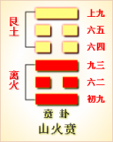

<!DOCTYPE html PUBLIC "-//W3C//DTD XHTML 1.0 Transitional//EN" "http://www.w3.org/TR/xhtml1/DTD/xhtml1-transitional.dtd">

<html xmlns="http://www.w3.org/1999/xhtml">
<head>
<meta content="text/html; charset=utf-8" http-equiv="Content-Type"/>
<title>周易第二十二卦：贲卦 山火�?艮上离下原文解释翻译-周易-国学�?/title>
<meta content="周易,贲卦,山火�?艮上离下" name="keywords"/>
<meta content="周易,贲卦,山火�?艮上离下，周易第二十二卦：贲�?山火�?艮上离下解释翻译�?（山火贲）艮上离�?《贲》：亨。小利有攸往�?初九，贲其趾，舍车而徒�?六二，贲其须�?九三，贲如，濡如，永贞吉�?六四，贲如皤如，白马翰如。匪寇，婚媾�?六五，贲于丘�? name="description"/>
<link href="css.css" media="screen" rel="stylesheet" type="text/css"/>
</head>
<body>
<div class="gxlayout">
</div>
<div class="gxlayout">
<div class="ihead">
<div class="title"><a>周易</a></div>
<ul class="more fl">
<li>当前位置:<a>国学梦首�?/a> &gt; <a>国学经典</a> &gt; <a>经部</a> &gt; <a>四书五经</a> &gt; <a>周易</a> &gt;  周易第二十二卦：贲卦 山火�?艮上离下原文解释翻译</li>
</ul>
</div>
<div class="gxbl fl">
<div class="latitle">

<h1>周易第二十二卦：贲卦 山火�?艮上离下</h1>
<div class="lainfo"><span>作者：佚名</span> <span>全集�?a>周易</a></span> <span>来源：网�?/span> <span>[<a rel="nofollow" target="_blank">挑错/完善</a>]</span></div>
</div>
<div class="lacontent">
<div class="clearfix"></div>
<!--<!-- allowfullscreen="" frameborder="0" height="36" src="http://www.ximalaya.com/swf/sound/yellow.swf?id=1382585&amp;auto=true" width="260"></iframe>-->
<p style="text-align:center"><strong></strong></p>
<p style="text-align:center"><a>周易第二十二卦详�?/a></p>
<p style="text-align:center"><a>第二十二卦初九爻详解</a>　<a>第二十二卦六二爻详解</a>　<a>第二十二卦九三爻详解</a></p>
<p style="text-align:center"><a>第二十二卦六四爻详解</a>　<a>第二十二卦六五爻详解</a>　<a>第二十二卦上九爻详解</a></p>
<p><strong><a target="_blank">周易</a>第二十二�?�?山火�?艮上离下</strong></p>
<p>贲：亨。小利有所往�?/p>
<p>彖曰：贲，亨;柔来而文刚，故亨。分刚上而文柔，故小利有攸往。天文也;文明以止，人文也。观乎天文，以察时变;观乎人文，以化成天下�?/p>
<p>象曰：山下有火，�?君子以明庶政，无敢折狱�?/p>
<p>初九：贲其趾，舍车而徒。象曰：�?车而徒，义弗乘也�?/p>
<p>六二：贲其须。象曰：贲其须，与上兴也�?/p>
<p>九三：贲如濡如，永贞吉。象曰：永贞之吉，终莫之陵也�?/p>
<p>六四：贲如皤如，白马翰如，匪寇婚媾。象曰：六四，当位疑也。匪寇婚媾，终无尤也�?/p>
<p>六五：贲于丘园，束帛戋戋，吝，终吉。象曰：六五之吉，有喜也�?/p>
<p>上九：白贲，无咎。象曰：白贲无咎，上得志也�?/p>
<p><strong><a href="22_贲卦.html" target="_blank">贲卦</a>卦象，山火贲卦的象征意义</strong></p>
<p>山火贲贲，这个卦是异卦相叠，下卦为离，上卦为艮。离为火为明;艮为山为止�?/p>
<p>贲，指贝壳的光泽。光泽和贝壳相互映衬，彼此装饰，色彩交错，合为一体，显得文雅又光明。因此，贲含有装饰和文明之意。贲卦论述文与质的关系，以质为主，以文调节，文明而有节制�?/p>
<p>山火贲贲卦下卦为离，离为火，上卦为艮，艮为山。山下有火，一片艳红，花木相映，锦绣如文。喻男婚女嫁，国政家制，都有<a target="_blank">仪礼</a>制度，构成了复杂的社会人文关系，用以维护现存的社会秩序。以文明的制度，使每个人都懂得一定的礼仪，这就是人类集体生活必需的装饰�?/p>
<p>贲卦位于<a href="21_噬嗑�?html" target="_blank">噬嗑�?/a>之后，《序卦》中这样说道：“物不可以苟合而已，故受之以贲。贲者，饰也。”事物不可以勉强相合就算了，还须加以文饰，所以接下来谈的就是贲卦。《杂卦》之中对贲的解释是：“贲，无色也。”由此可知，所谓的文饰，并非加上颜色，而是以无色来突显出其原有的面貌。在方法上，则是通过适当的安排，使事物处在合宜的位置上�?/p>
<p>《象》曰：“山下有火，贲。君子以明庶政，无敢折狱。”《象》中指出：离火在下，艮山在上，所以离下艮上之卦如同山下有火一般，形成山火相映，彼此装饰之势，故本�?a target="_blank">起名</a>为贲。君子应该学习这种精神，以光明磊落的行为处理各种政事，对人狱的事，不可轻易地决断�?/p>
<p>贲卦属于中上卦，象征装饰，告诉人们饰外扬质，返朴归真的道理，告诫人们要笃实平淡，不慕虚名。贲卦启示了饰外扬质的道理，属于中上卦。《象》对此卦的断语是：近来运转锐气周，窈窕淑女君子求，钟鼓乐之大吉庆，占者逢之喜临头�?/p>
<p>山火贲此卦卦名为贲。《说文》中说：“贲，饰也。”可见“贲”字的本义是装饰、打扮的意字。从字结构上分析，贲由“卉”与“贝”组成，花草与贝壳都是古代人们的装饰品，花草与贝壳都有斑斓的色彩，所以贲卦讲的便是用斑斓的色彩修饰朴素。在盛世中，人们富足了，便会滋生淫邪与腐败，惩治这股歪风邪气后，君王要经常体察民情，然后还要以身作则，做出表率，对一小撮的坏分子给予严厉的打击，于是社会开始出现了平安与兴旺，人民安居乐业。于是，对生活的追求便会有所提高，便幵始追求修饰的艺术。所以噬嗑卦之后便是贲卦。贲卦其实表示的是艺术的发展。一个穷困的社会，是不可能盛行艺术的，只有社会财富积蓄多了，人们才会对生活有更高的要求，于是艺术便开始在生活中唱主调了。住房要讲究装潢艺术，吃饭要讲究饮食艺术，穿衣要讲究服饰艺术，写文章也要讲究表达的艺术……总之，盛世是艺术大发展的时代。贤明的君王把道德的教育同艺术结合起来，于是使民众可以普遍受到教育，提高修养�?/p>
<p>山火贲贲卦的�?a target="_blank">�?/a>也是三阳三阴，与噬嗑卦的卦画排列顺序正好相反。从卦象上进行分析，贲卦上卦为艮为山，下卦为离为火，山下有火就是贲卦的卦象。山下的火是怎么装饰山的�?远古人类居于<a target="_blank">山中</a>的洞穴中，晚上点燃篝火照明，人们围着篝火载歌载舞，从远处望去，处处的篝火构成一幅美妙的图案。这就是贲的意思�?/p>
<p>柔来而文刚：贲卦�?a href="11_泰卦.html" target="_blank">泰卦</a>变化而来，泰卦的九二爻与上六爻互换，便成了贲卦。此句意思是泰卦的上六爻来到贲卦的六二的位置，文�?a href="30_离卦.html" target="_blank">离卦</a>的两个阳爻�?/p>
<p>关键词：周易,贲卦,山火�?艮上离下</p>
<div class="clearfix"></div>
<div class="title"><div class="thot">解释翻译</div><span>[挑错/完善]</span></div><p><a href="22_贲卦.html" target="_blank">贲卦</a>：亨通。外出有小利�?/p>
<p>初九：把脚上穿戴好，不坐车而徒步行走�?/p>
<p>六二：把胡须修饰好�?/p>
<p>九三：奔跑得满身大汗。占问长久吉凶得吉兆�?/p>
<p>六四：一路奔跑，太阳晒得像火烧，白马昂头飞驰。不是来抢劫，而是来娶亲�?/p>
<p>六五：跑到丘园，送上一束束布帛。遇到了困难，结果还是吉利�?/p>
<p>上九：送上白色大肥猪，没有灾祸�?/p>
<div class="title"><div class="thot">注释出处</div><span>[请记住我�?国学�?www.guoxuemeng.com]</span></div><p>①贲(b i)是本卦标题。贲的意思是装饰，文饰。在本卦中，贲还借用为“奔”和“豮”。全卦内容主要讲婚嫁之事，作标题的“贲”字为卦中多�?词�?/p>
<p>②贲：文饰�?/p>
<p>③徒：徒步行走�?/p>
<p>④贲：借用为“奔”。濡�?汗湿�?/p>
<p>⑤贲：借用为“奔”。皤(po)：用作“燔”，意思是焚烧�?/p>
<p>�?翰：马头高昂，这里指马飞驰的样子�?/p>
<p>(7)丘园：指女家附近的地方�?/p>
<p>(8)束：五匹帛为一束。戋戋：一大堆的样子�?/p>
<p>(8)贲：借用为“豮”，�?思是大猪�?/p>
<div class="clearfix"></div>
<div class="contextdhall clearfix">
<ul>
<li>上一篇：<a href="21_噬嗑�?html">周易第二十一卦：噬嗑�?火雷噬嗑 离上震下</a> </li>
<li>下一篇：<a href="23_剥卦.html">周易第二十三卦：剥卦 山地�?艮上坤下</a> </li>
<li>全   文�?a>周易</a></li>
</ul>
</div>
</div>
<div class="clearfix mt20"></div>
</div>
</div>
<div class="clearfix mt20"></div>
<div class="gxlayout">
</div>
<script>
var _hmt = _hmt || [];
(function() {
  var hm = document.createElement("script");
  hm.src = "https://hm.baidu.com/hm.js?872034ded637616c5cf8e173a446bb0e";
  var s = document.getElementsByTagName("script")[0];
  s.parentNode.insertBefore(hm, s);
})();
</script>
</body>
</html>
